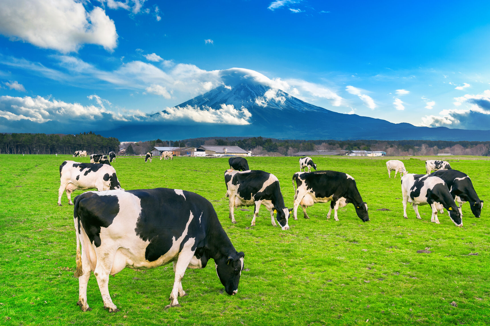
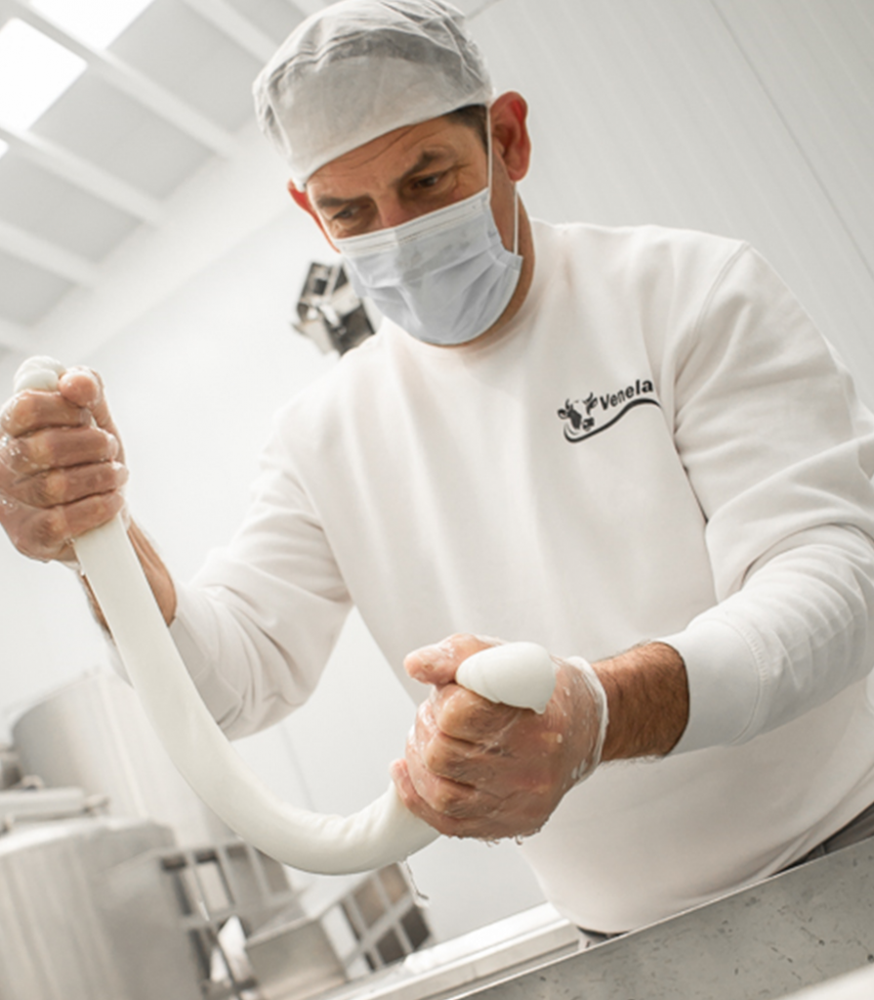
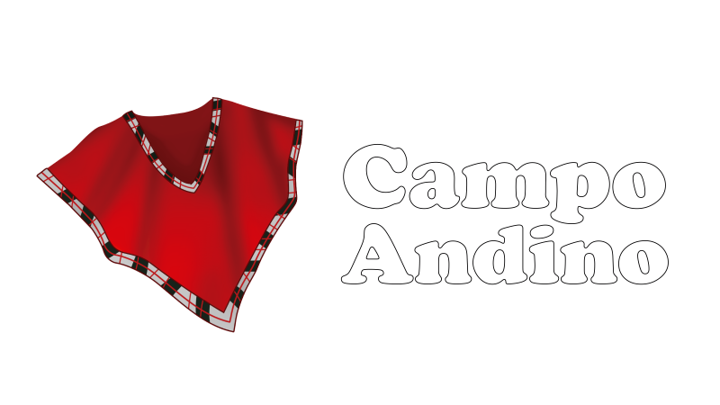

Conoce el secreto de nuestros quesos
Todo comienza en nuestras granjas, pero la magia ocurre en nuestra fábrica
Ver másLas ensaladas no dejan de ser un complemento y parte de la alimentación de muchos, descubre como integrar nuestros quesos en tus recetas
← Desliza para ver más quesos →

Somos VENELAC FOOD
O simplemente Venelac, (para los amigos), llevamos más de 10 años trayendo el sabor auténtico del queso latino a los hogares en España.
ConócenosLatinoamérica, España y Europa
Toca tu bandera y te enseñamos su queso y 7 recetas típicas.
Quesos desde 250 g, recetas paso a paso, menús para tus invitados y precio por kilo para comparar.
Calcula cuánto queso necesitas por semana, compara el precio por kilo y pide tu tarifa mayorista.
Nuestros productos estrellas
Recetas con queso latino
Las ensaladas no dejan de ser un complemento y parte de la alimentación de muchos, descubre como integrar nuestros quesos en tus recetas
1 Elige tu país
2 ¿Qué toca hoy?
O simplemente Venelac, (para los amigos), llevamos más de 10 años trayendo el sabor auténtico del queso latino a los hogares en España. Cuidamos mucho los detalles para capturar esos sabores que te transportan, nos encanta hacerte sentir como en casa con la misma tradición de hogar
Descubre la tradición de más de una década en manos de nuestros chicos expertos en la elaboración de tus quesos favoritos
¡Tienes que verlo!En Venelac, nuestra misión es sencilla, pero poderosa; es llevar el auténtico sabor del queso latino a cada rincón de España, haciendo que te sientas cada vez más cerca de casa con cada bocado. Nos comprometemos a mantener el sabor de las recetas tradicionales que conoces y amas, con un cuidado único y un estándar de calidad que nos distingue. Queremos que cada vez que pruebes uno de nuestros productos te sientas como en casa
Queremos ser mucho más que una marca de queso; queremos ser el puente que conecta a las personas con sus raíces y sus tradiciones. Nuestra visión es convertirnos en el referente número uno de quesos latinoamericanos en Europa, siendo sinónimo de calidad, autenticidad y sabor. Proyectamos con que, algún día, cuando pienses en ese «Queso» especial que te recuerda a casa, pienses en Venelac. Porque para nosotros, el hogar no es solo un lugar, ¡es un sabor que queremos compartir con el mundo!, por eso nuestro eslogan seguirá siendo VENELAC con sabor de Hogar
Quiero saber másNuestro equipo está totalmente equipado con las herramientas y cuidados necesarios para mantener ese sabor de hogar, cuidando la higiene en todo momento


Cliente mayorista
Elige los quesos de tu negocio, di cuántas raciones quieres de cada uno y de qué gramaje. Nosotros calculamos kilos, envases y porciones, y el equipo de ventas te responde con la oferta mayorista.
Los quesos de la familia Venelac y Campo Andino marcados «consultar» no tienen precio ni formato publicado: ventas los confirma.
ventas@venelac.es